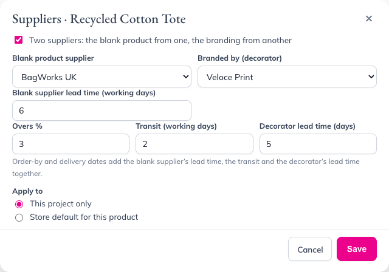
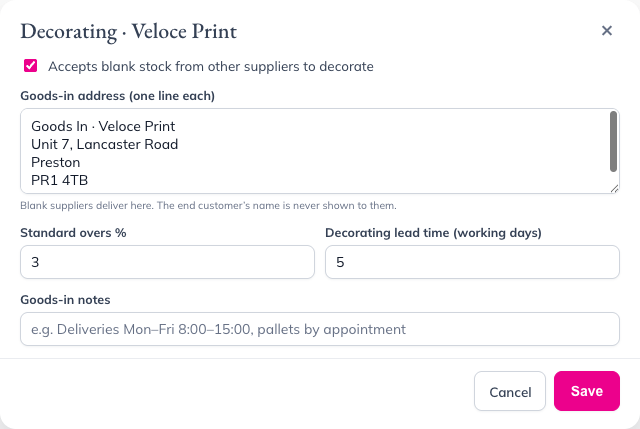
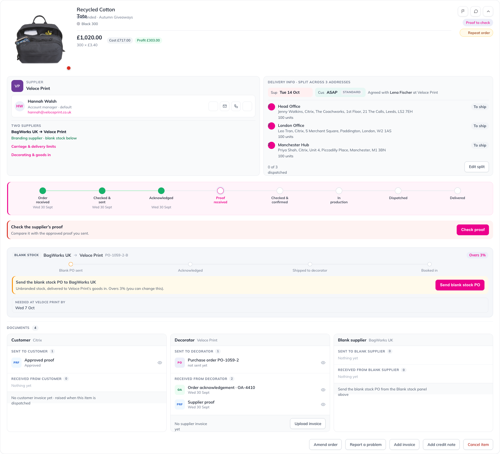
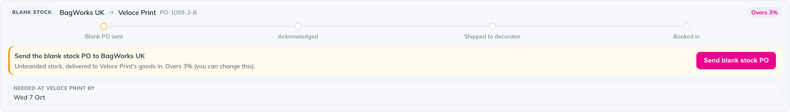
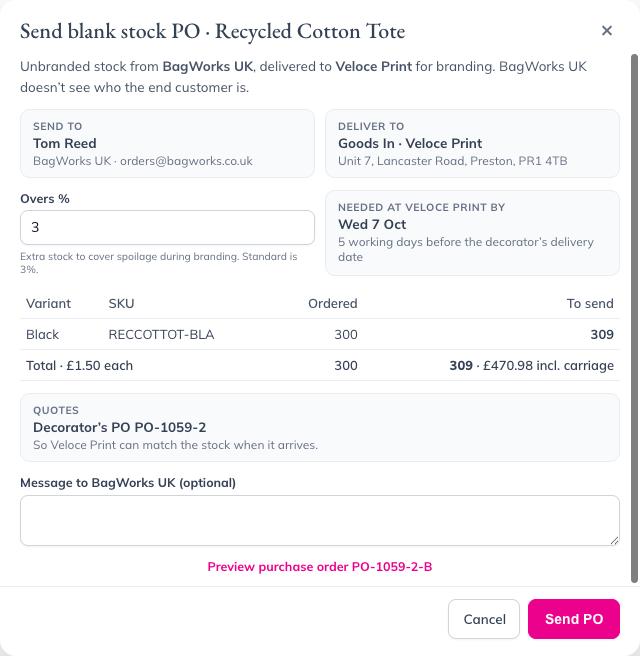
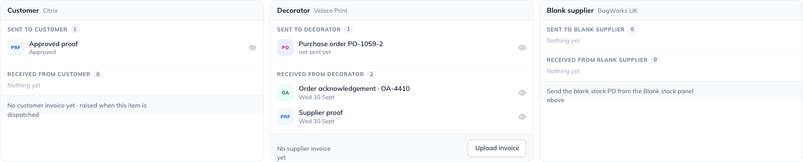

1. Overview
Some products are bought unbranded from one supplier and branded by another. For example, the Recycled Cotton Tote is supplied blank by BagWorks UK and screen-printed by Veloce Print. The platform treats this as one product line for the customer, and as two linked supplier jobs for the distributor.
MSTWO.ready(orderId, lineIdx) enforces this.2. Who sees what
| Role | Sees | Never sees |
|---|---|---|
| Customer | One product, one flow, combined dates and one price. | That there are two suppliers, the blank lane, supplier names or costs. |
| Distributor | Everything: both suppliers, the Suppliers editor, both POs, the blank lane, risk warnings, both invoices and the cost split. | — |
| Decorator | Its own PO (branding only), an Incoming blank stock panel with the blank supplier’s tracking, and the Book in stock step. | The blank supplier’s prices to the distributor, and the customer’s prices. |
| Blank supplier | Only its blank stock PO: the decorator’s goods-in address, the decorator’s PO ref and quantities including overs. It can acknowledge and add tracking. | The customer’s name, customer prices, branding and the rest of the order. Nothing is shown until its PO has been sent. |
3. Lifecycle
The two lanes run in parallel after the order is placed and meet at Booked in.
todo Blank PO to send→
sent Blank PO sent→
ack Acknowledged + dispatch date→
shipped Tracking to decorator→
booked Booked in at decorator
4. Setting a product up
Registry: which products are two-supplier
MSTWO.get(name, proj) resolves in this order: project override (ms-two-proj) → store default (ms-two-prod) → seed (Recycled Cotton Tote: BagWorks UK → Veloce Print). An entry of {off:true} switches it off at that level. It returns {blank, brand, overs, transit, brandLead, blankLead} or null.
- Store default: the Suppliers box on a store product page (distributor only) calls
MSTWO.editor(name)→setProd. - Per project: the “2 suppliers · A → B” chip in the product pop-out’s row (distributor only) calls
MSTWO.editor(name, proj)→setProj, with a “Reset to store default” option. - Defaults: overs 3%, transit 2 working days, decorator lead 5 WD, blank supplier lead 6 WD (
DEF), overridden by the decorator’s directory settings. - Decorator list: only suppliers whose directory entry accepts external stock are offered as decorators.

MSTWO.editor): blank supplier, decorator, overs, transit and both lead times.Supplier directory: decorating & goods in
Stored in ms-sup-decor[supplier]: accepts (external stock), goods-in address lines, standard overs %, decorating lead and goods-in notes (e.g. delivery hours). The supplier edits it from Supplier Portal → Profile → Decorating & goods in. The distributor edits it from the order page’s supplier card → Decorating & goods in (MSTWO.decorEditor). It feeds the blank PO’s deliver-to address and notes, plus the registry defaults.

MSTWO.decorEditor / decorCfg / goodsIn).5. Project stage
Built into the project page and the product pop-out (product-modal.js). The pop-out’s d.twoSupplier reads the registry live.
Blank lead + transit + decorator lead + the decorator’s days in lieu. That total feeds the order-by and estimated supplier dates. The delivering supplier (supplierName) is the decorator. The row shows “· 2 suppliers”, with the breakdown on hover.
priceCalc adds carriage for blanks to the decorator (the matrix’s “Delivery — blanks to decorator” row), saved to ms-pm-spec.costs.carriage. On orders it becomes a “Carriage to decorator” cost row on the blank PO, not the decorator’s.
Price → locked prices with “Two-supplier” on. The blank supplier quotes blank per unit + carriage (cUnb_, cDeliv_). The decorator quotes decoration per unit + setup. reqState stays 'partial' until both have replied, and applyCard('price', …) won’t advance until then.
Sample → Branded (distributor only) shows a tracker: blank sample ordered → sent to decorator → branded → sent to customer. Steps have Mark done / Undo, stored in ms-two-smp.
Requests and replies go to the blank supplier (stockSupplier). Distributors see “Stock is held by <blank supplier>” on the Stock tab.
Always produced by the decorator. The customer approves it as normal. There’s no change to the customer-facing Design tab.
6. Order stage
On the order page (order-detail.js), twoL(l) is true for two-supplier lines (not samples). supOf(l) returns the decorator for the line, and the blank supplier for unbranded samples. So the decorator owns the main PO, the step bar, acknowledgement, proof, dispatch and tracking.
- Decorator PO: prices exclude the blank product and carriage rows. The print and Check & send show an “Incoming blank stock” warning with the blank supplier’s name and PO.
- PO key migration:
ops()adds missing supplier PO keys and drops empty unsent ones when a line changes to two-supplier. - Production gate: the decorator’s “acknowledge approved proof / start production” is blocked until
MSTWO.ready(). - Split deliveries:
MSSPLIT.supplierOfreturns the decorator, so its carriage rates and limits apply.

7. Blank stock lane
Rendered by MSTWO.laneHTML(o, i, role, ctx) under the item’s next-step panel, for distributors and decorators only. Its actions are wired by MSTWO.wire(root, role) through data-tw / data-twk="orderId:lineIdx". State lives in ms-two-lane[orderId][lineIdx].

Action (data-tw) | Who | Sets | Notes |
|---|---|---|---|
send | Distributor | st:'sent', overs, sentAt, sentBy, msg | Overs is editable. Quantities are rounded up per variant (withOvers, e.g. 300 → 309 at 3%). Delivers to the decorator’s goods-in and quotes the decorator’s PO. |
oa | Blank supplier / distributor | st:'ack', oa:{ref, dispatch, file, at, by, checked} | Dispatch date to the decorator. Tick-to-match checks it against the PO. |
trk | Blank supplier / distributor | st:'shipped', trk:{courier, no, at, by} | Courier links come from CURL. Shown to the decorator as incoming stock. |
book | Decorator / distributor | st:'booked', book:{rows, recv, dmg, sent, short, hold, note, at, by} | Received and damaged counts per variant. If good stock is short: hold production and ask for the rest (hold:true), or proceed. |
inv | Distributor | inv:{no, amount, diff, file, at} | Matched to sent qty × blank unit + carriage (blankCost). The button is also in the Blank supplier documents column. |
chase | Distributor | activity log | Templated messages depend on the current step. |
print | Anyone with the lane | — | MSTWO.printPO(ctx): blank stock PO with no customer name. |
MSTWO.needBy (the decorator’s supplier date − decorator lead).
8. Money & documents
- Customer: one sell price and one VAT invoice per product at dispatch, as for any other line.
- Decorator cost: branding only (
supCost), also used for its invoice match. - Blank supplier cost: sent quantity including overs × blank unit + carriage (
MSTWO.blankCost). Blank PO number:MSTWO.blankPO(ctx), e.g.PO-1059-2-B. - Costs & margin: sell price − blank cost − carriage − branding cost.
- Documents: each two-supplier product has three columns: Customer, Decorator and Blank supplier. Blank supplier documents use keys
twpo:i(blank PO),twoa:i(acknowledgement) andtwinv:i(invoice). Each column has a status bar with the invoice match and an Upload / Replace invoice button.

9. Amendments & problems
- Quantity or variant change (approved amendment) calls
MSTWO.amended():- Before the blanks ship: the lane goes back to “Revised blank stock order · waiting for acknowledgement”, and the blank supplier re-acknowledges.
- After shipping or booking in: a red “agree any extra or returned stock with <blank supplier>” step, cleared with Mark sorted.
- Artwork-only changes only affect the decorator. The blank PO is untouched.
- Short or damaged stock is handled at Book in: hold production and ask for the rest, or proceed with what arrived.
- Cancellation: cancelling the line creates a PO cancellation document for the decorator. Blank-supplier cancellation isn’t built yet, see Going live.
10. Supplier views
- Blank supplier’s order page: in supplier role, if the signed-in supplier is only the blank supplier on the order,
MSTWO.blankPagerenders just its PO. That shows goods-in, the decorator’s PO ref, variants with overs, and Unit / Total columns with carriage. It has acknowledge and tracking actions. It shows “Nothing to action yet” until the PO is sent. - Decorator’s order page: the normal supplier view plus the Incoming blank stock lane and Book in stock.
- Supplier Orders list:
MSTWO.stockListHTML(supplier, orders)adds “Blank stock you’re sending” (blank supplier) and “Incoming blank stock” (decorator) panels above the list. Neither shows customer names. - Demo limit: the demo supplier login is always BagWorks UK, so the decorator panel can only be tested once there are real supplier logins.
11. Data model
All in localStorage for the prototype. Each key maps to a table or column in the real backend.
| Key | Shape | Backend suggestion |
|---|---|---|
ms-two-prod | {productName: {blank, brand, overs, transit, brandLead, blankLead} | {off:true}} | product_supply_routes (distributor, product, blank_supplier_id, decorator_id, …) |
ms-two-proj | {projectId: {productName: {…} | {off:true}}} | project_line.supply_route (override) |
ms-sup-decor | {supplier: {accepts, goodsIn:[lines], overs, lead, notes}} | supplier.decorating_profile |
ms-two-lane | {orderId: {lineIdx: {st, overs, sentAt, oa, trk, book, inv, rev}}} | blank_purchase_orders + blank_po_events |
ms-two-smp | {projectId: {productName: {step: timestamp}}} | sample_jobs (two stages) |
ms-pm-spec · costs.carriage | carriage to decorator for the line | quote_lines (per supplier) |
12. window.MSTWO API
get(name, proj)null.setProd(name, v) · setProj(proj, name, v)editor(name, proj?)decorEditor(supplier, onDone) · decorCfg(s) · goodsIn(s)laneHTML(o, i, role, ctx) · wire(root, role)lane(orderId, i) · ready(orderId, i)blankPO(ctx) · blankCost(ctx) · needBy(ctx)printPO(ctx)blankPage(root, o, supplier)stockListHTML(supplier, orders)amended(orderId, i, change)ctx comes from ctxFor(line, i) in order-detail.js: the line, its state, the route (two), variants (vs), cost rows and the decorator PO.
13. Where it hooks in
| File | What it does with two-supplier lines |
|---|---|
order-detail.js | TWO, twoL, supOf, ctxFor, supCost, lane placement, production gate, PO print warning, three-column documents (twpo/twoa/twinv), PO key migration in ops(). |
product-modal.js | d.twoSupplier from the registry, the “2 suppliers” row chip, priceCalc carriage, two quotes (reqState), the sample tracker and the Stock note. |
Merchsmith Project - Autumn Giveaways.html | Combined lead time and order-by date, supplierName = decorator, stockSupplier = blank supplier. |
split-delivery.js | MSSPLIT.supplierOf → decorator, for carriage and limits. |
order-amend.js | Calls MSTWO.amended() when an approved amendment changes qty or variants. |
order-page.js | Supplier Orders list: MSTWO.stockListHTML. |
Merchsmith Store.html · Merchsmith Supplier Portal.html | Store product page Suppliers box; supplier profile → Decorating & goods in. |
14. Going live
- Two PO records per line, linked (the blank PO references the decorator PO).
- Real emails to each supplier contact. The blank PO email goes out with no customer data.
- Supplier logins scoped per PO. The blank supplier can only read its PO and the decorator’s goods-in.
- Events: acknowledged, shipped (courier webhook), booked in → recompute
ready. - Scheduled check for delivery at risk, with a notification to the account manager.
- PO cancellation document for the blank supplier when a two-supplier line is cancelled.
- Decorator’s Incoming stock list with a separate decorator login (the demo is BagWorks only).
- Returns of leftover overs to the blank supplier.
- Partial deliveries of blank stock (several shipments per blank PO).
Full status log: HANDOVER.md → “Two-supplier lines”.
15. Try it
- Sign in as the distributor and open MS-1059 (Recycled Cotton Tote, BagWorks UK → Veloce Print).
- In the grey Blank stock panel, click Send blank stock PO. Change overs to see quantities round up per variant, then send.
- Use the next buttons to add the acknowledgement (set a late dispatch date to trigger Delivery at risk), then tracking, then Book in stock. Try entering damaged units.
- Check that the decorator’s production step unlocks only after booking in.
- Upload a blank supplier invoice from the Blank supplier documents column and check the match against the PO.
- Switch to the supplier role (BagWorks UK) to see the blank-only order page and the “Blank stock you’re sending” panel on Orders.
- Open the tote in Autumn Giveaways to see the “2 suppliers” chip, two quotes, lead time breakdown and the sample tracker.
Testing changes saved browser data. Download a backup first (Admin → Settings → Data backup).